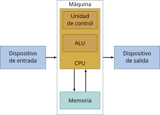
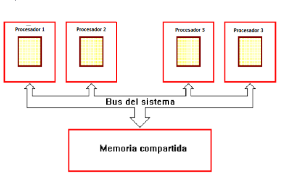
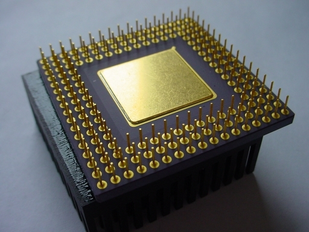
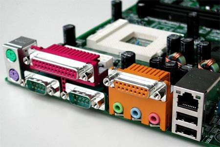

Modelos de Arquitectura de Computo
La arquitectura de computadoras es el diseño y la organización de un sistema para un equipo de
cómputo.
Es un modelo y descripción de cada función, así como los requerimientos y las implementaciones de
diseño para varias partes del equipo de cómputo.
Modelo Vonn Neumann

La unidad central de proceso (CPU), está conectada a una memoria principal única (casi siempre sólo
RAM) donde se guardan las instrucciones del programa y los datos. A dicha memoria se accede a través
de un sistema interconexión de buses único (control, direcciones y datos). En un sistema con
arquitectura Von Neumann el tamaño de la unidad de datos o instrucciones está fijado por el ancho
del bus que comunica la memoria con la CPU. El tener un único bus hace que el microprocesador sea
más lento en su respuesta, ya que no puede buscar en memoria una nueva instrucción mientras no
finalicen las transferencias de datos de la instrucción anterior. Componentes principales de Von
Modelo Hardvard

Esta arquitectura utiliza los Micro controladores, tiene la unidad central de proceso (CPU) conectada
a dos memorias (una con las instrucciones y otra con los datos) por medio de dos buses diferentes.
Una de las memorias contiene solamente las instrucciones del programa (Memoria de Programa), y la
otra sólo almacena datos (Memoria de Datos). Ambos buses son totalmente independientes lo que
permite que la CPU pueda acceder de forma independiente y simultánea a la memoria de datos y a la de
instrucciones. El tamaño de las instrucciones no está relacionado con el de los datos, y por lo
tanto puede ser optimizado para que cualquier instrucción ocupe una sola posición de memoria de
programa, logrando así mayor velocidad y menor longitud de programa. La principal desventaja de esta
arquitectura; el bus de datos y direcciones único se convierte en un cuello de botella por el cual
debe pasar toda la información que se lee de o se escribe Modelo Harvarda la memoria, obligando a
que todos los accesos a esta sean secuenciales. Limita el grado de paralelismo (acciones que se
pueden realizar al mismo tiempo) y por lo tanto, el desempeño de la computadora.
Segmentadas

Es una de las tecnologías utilizadas para realizar la segmentación o paralelismo. Divide el
procesador, en etapas, procesa una instrucción diferente en cada una y trabaja con varias a la vez.
Pueden trabajar de forma paralela, en diferentes instrucciones, utilizando una cola de instrucciones
para su comunicación, denominado entubamiento. La técnica de implementación clave utilizada para
hacer CPU. La dependencia de datos y de control, que tiene como efecto la disminución del
rendimiento del pipelining. La segmentación de cauce (pipelining) es una forma efectiva de organizar
el hardware del CPU para realizar más de una operación al mismo tiempo. Consiste en descomponer el
proceso de ejecución de las instrucciones en fases o etapas que permitan una ejecución simultánea.
Las etapas están conectadas, cada una a la siguiente, para formar una especie de cauce las
instrucciones se entran por un extremo, son procesadas a través de las etapas y salen por el otro.
La productividad de la segmentación está determinada por la frecuencia con que una instrucción salga
del cauce.
Multiprocesamiento

Se denomina multiprocesador a un computador que cuenta con dos o más microprocesadores (CPUs). La
arquitectura NUMA, donde cada procesador tiene acceso y control exclusivo a una parte de la memoria.
La arquitectura SMP, donde todos los procesadores comparten toda la memoria. Para que un
multiprocesador opere correctamente necesita un sistema operativo especialmente diseñado para ello.
La arquitectura NUMA, donde cada procesador tiene acceso y control exclusivo a una parte de la
memoria. La arquitectura SMP, donde todos los procesadores comparten toda la memoria.
Analisis de los Componentes
Unidad Central de Procesamiento CPU

Se la suele llamar coloquialmente como microprocesador o simplemente procesador, y puedes
considerarla como el cerebro de cualquier dispositivo. Se encarga de procesar todas las
instrucciones del dispositivo, leyendo las órdenes y requisitos del sistema operativo, así como las
instrucciones de cada uno de los componentes y las aplicaciones. CPU es la que se encarga de que
todo funcione correctamente, y de interpretar todo lo que quiere hacer el sistema operativo o los
componentes, estableciendo las conexiones y realizando todos los cálculos precisos para que
funcione. Cuanto más potente sea el procesador, más rápido podrá hacer las operaciones y más rápido
funcionará tu dispositivo en general
Unidad Aritmetica Logica

Es un circuito logico digital que realiza operaciones aritmeticas y logicas entres los datos de un
circuito: suma resta, division y multiplicacion, asi como establece comparaciones logicas a traves
de los condicionales logicos "si", "no", y "o". Todos los microprocesadores incluyen al menos una
ALU, que varia su poder y complejidadsegún su finalidad Además, la ALU cuenta con una serie de
registros para almacenar los datos y bits de informacion sobre los resultados.
Registros
Los registros que encuentran dentro de cada procesador su función principales almacenar los valores
de cada uno de los datos,comandos,instrucciones o estados binarios que son los que ordenan qué dato
debe procesarse, así como la forma en la que se debe realizar. Un registro no deja de ser una
memoria de velocidad alta y con poca capacidad. Cada registro puede contener una instrucción, una
dirección de almacenamiento o cualquier tipo de dato. Cada procesador tiene varias asignaciones o
tareas que debe de realizar para el manejo de la información.
Buses

Un bus se puede definir como una línea de interconexión portadora de información, constituida por
varios hilos conductores (en sentido físico) o varios canales (en sentido de la lógica), por cada
una de las cuales se transporta un bit de información. Existen dos tipos primordiales de buses
(conexiones) para el envío de la información: bus paralelo o serial: Bus paralelo: Es un bus en el
cual los datos son enviados por bytes al mismo tiempo, con la ayuda de varias líneas que tienen
funciones fijas.
Memorias
Conceptos basicos del manejo de memoria

La gestión de memoria o administración de memoria es el acto de gestionar la memoria de un
dispositivo informático. El proceso de asignación de memoria a los programas que la solicitan. La
gestión de la memoria principal de una computadora es una tarea de suma importancia para el
funcionamiento de la misma. Los sistemas de memoria virtual separan las direcciones de memoria
utilizadas por un proceso de las direcciones físicas reales, permitiendo la separación de procesos e
incrementando la cantidad efectiva de memoria de Memoria ram imgacceso aleatorio utilizando la
paginación. La calidad de la gestión de la memoria es crucial para las prestaciones del sistema. La
administración de memoria se refiere a los distintos métodos y operaciones que se encargan de
obtener la máxima utilidad de la memoria, organizando los procesos y programas que se ejecutan de
manera tal que se aproveche de la mejor manera posible el espacio disponible. Las técnicas que
existen para la carga de programas en la memoria son: partición fija, que es la división de la
memoria libre en varias partes (de igual o distinto tamaño) y la partición dinámica, que son las
particiones de la memoria en tamaños que pueden ser variables, según la cantidad de memoria que
necesita cada proceso.
Memoria RAM

La memoria del semiconductor utiliza en su arquitectura circuitos integrados basados en
semiconductores para almacenar información. Un chip de memoria de semiconductor puede contener
millones de minúsculos transistores o condensadores. Existen memorias de semiconductor de ambos
tipos: volátiles y no volátiles. En las computadoras modernas, la memoria principal consiste casi
exclusivamente en memoria de semiconductor volátil y dinámica, también conocida como memoria
dinámica de acceso aleatorio o más comúnmente RAM (Random Access Memory).
Memoria cache

Es la memoria de acceso rápido de una computadora, que guarda temporalmente las últimas informaciones
procesadas. La memoria caché es un búfer especial de memoria que poseen las computadoras, que
funciona de manera similar a la memoria principal, pero es de menor tamaño y de acceso más rápido.
Es usada por el procesador para reducir el tiempo de acceso a datos ubicados en la memoria principal
que se utilizan con más frecuencia. La caché es una memoria que se sitúa entre la unidad central de
procesamiento (CPU) y la memoria de acceso aleatorio (RAM) para acelerar el intercambio de datos.
Cuando se accede por primera vez a un dato, se hace una copia en la caché;
Manejo de entrada/salida
Módulos de entrada/salida.

Entrada SalidaPara poder hacer una operación entre el procesador y un periférico, se necesita
conectar estos dispositivos a la computadora y gestionar de manera correcta la transferencia de
datos. Esto, se puede realizar mediante los sistemas de módulos de Entrada/Salida. Estos módulos
están conectados con el procesador y la memoria principal, cada uno controla uno o más dispositivos
externos.
Entrada/salida programada
La entrada-salida programada (también entrada / salida programada , E / S programada , PIO ) es un
método de transmisión de datos , a través de entrada / salida (E / S), entre una unidad central de
procesamiento (CPU) y un dispositivo periférico , como un adaptador de red o un dispositivo de
almacenamiento Parallel ATA (PATA, anteriormente AT Attachment (ATA)). Cada transferencia de
elementos de datos se inicia mediante una instrucción en el programa, que involucra a la CPU para
cada transacción. Por el contrario, en las operaciones de acceso directo a memoria (DMA), la CPU no
participa en la transferencia de datos. El término puede referirse a E / S mapeadas en memoria
(MMIO) o E / S mapeadas en puertos (PMIO). PMIO se refiere a transferencias que utilizan un espacio
de direcciones especial fuera de la memoria normal, al que generalmente se accede con instrucciones
dedicadas, comoEN y FUERAen arquitecturas x86. MMIO [1] se refiere a transferencias a dispositivos
de E / S que están mapeados en el espacio de direcciones normal disponible para el programa. PMIO
fue muy útil para los primeros microprocesadores con espacios de direcciones pequeños, ya que los
dispositivos de E / S no consumían el valioso recurso.
Entrada/Salida mediante interrupciones
Esta técnica pretende evitar que el procesador pare o haga trabajo improductivo, mientras que espera a que el periférico esté preparado para hacer una nueva operación. El hardware de la computadora, necesita tener un conjunto de líneas de control del bus del sistema y de petición de interrupción. Funcionamiento: El procesador ejecuta instrucciones de un programa. Al finalizar cada instrucción comprueba si se ha producido una interrupción. En caso afirmativo se salva el estado actual del programa (contador del programa y registros) y se salta a ejecutar la rutina de servicio correspondiente. La rutina de servicio efectúa las operaciones apropiadas en la E/S para realizar la transferencia de datos solicitada. Al finalizar la rutina de servicio se recupera el estado de la CPU y se continúa ejecutando el programa que se estaba ejecutando antes de la interrupción. Las interrupciones pueden ser: ENMASCARABLES (se pueden dejar de atender por software) NO ENMASCARABLES (siempre atendidas) Dos formas de conocer la dirección/posición (vector) donde se encuentra la rutina de servicio de la interrupción Vector de interrupciones siempre FIJO ó el periférico suministra el vector de interrupción
Acceso directo a memoria
El DMA (acceso directo a la memoria) permite que el dispositivo de red mueva los datos del paquete directamente a la memoria del sistema, reduciendo la utilización de la CPU. Sin embargo, la frecuencia y los intervalos aleatorios en los cuales los paquetes llegan no permiten que el sistema ingrese un estado de energía más bajo. El coalescentes DMA permite que el NIC recoja los paquetes antes de que inicie un evento DMA. Esto puede aumentar la latencia de la red, pero también aumenta las probabilidades de que el sistema consuma menos energía. Los adaptadores y dispositivos de red basados en el controlador Ethernet Intel® I350 (y controladores posteriores) Asistencia la fusión de DMA. Los valores coalescentes más altos de DMA resultan en más energía guardada, pero pueden aumentar la latencia de red de su sistema. Si habilita la coalescación de DMA, también debe establecer la tasa de moderación de interrupciones en "mínimo". Esto minimiza el impacto de latencia impuesto por la coalescencia de DMA y da como resultado un mejor rendimiento de rendimiento de red máximo. Debe habilitar la coalescencia de DMA en todos los puertos activos del sistema. Usted no puede ganar ningún ahorro de energía si se habilita sólo en algunos de los puertos en su sistema. También hay varias configuraciones de BIOS, plataformas y aplicaciones que afectarán a su potencial ahorro energético.
Canales y procesadores de entrada/salida
EL canal de E/S es una extensión del bus del 8088. Este canal contiene un bus de datos bidireccinal de 8 bits, 20 líneas de dirección, 6 niveles de interrupción, líneas de control para las operaciones de lectura y escritura para la memoria y la E/S, líneas de control de 3 canales de DMA, y líneas de control para el tiempo de refresco de memoria. Los canales de E/S proporcionan una línea Ready para permitir operaciones con dispositivos de memoria o de E/S lentos. Cuando la línea no está activada por un dispositivo, el procesador genera ciclos de lectura y esritura a memoria que toman cuatro ciclos de 210 ns (esto es, 840 ns) por byte. Todos los ciclos de lectura y escritura a E/S generados por el procesador requieren de cinco ciclos de 210 ns de reloj (1.05 ms) por byte. Todas las transferencias DMA requieren de cinco ciclos de reloj para un ciclo de tiempo de 1.05 ms por byte. Los ciclos de reloj se presentan aproximadamente cada 15 m sec y requieren de cinco ciclos de reloj. Los dispositivos de E/S están direccionados utilizando un mapeo de E/S con el espacio de direccionamiento. El canal proporciona a las tarjetas de E/S 512 direcciones de dispositivos.
Buses
Tipos de Buses
Existen dos tipos de transferencia en los buses: Serie: El bus solamente es capaz de transferir los datos bit a bit. El bus tiene un único cable que transmite la información. Paralelo: El bus permite transferir varios bits simultáneamente, por ejemplo 8 bits. Aunque en primera instancia parece mucho más eficiente la transferencia en paralelo, esta presenta inconvenientes: La frecuencia de reloj en el bus paralelo tiene que ser más reducida. La longitud de los cables que forman el bus está limitada por las posibles interferencias, el ruido y los retardos en la señal. Además, los modernos buses serie están formados por varios canales: En este caso se transmite por varios buses serie simultáneamente. En los primeros computadores electrónicos, era muy habitual encontrar buses paralelos, quedando los buses serie dedicados para funciones de menor entidad y dispositivos lentos, como el teclado. La tendencia en los últimos años es reemplazar los buses paralelos por buses serie (que suelen ser multicanal). Estos son más difíciles de implementar, pero están dejando velocidades de transferencia más elevadas, además de permitir longitudes de cable mayores.
Tipos de Buses
Un bus es un medio compartido de comunicación constituido por un conjunto de líneas (conductores) que conecta las diferentes unidades de un computador. La principal función de un bus será, pues, servir de soporte para la realización de transferencias de información entre dichas unidades. La unidad que inicia y controla la transferencia se conoce como master del bus para dicha transferencia, y la unidad sobre la que se realiza la transferencia se conoce como slave. Los papeles de master y slave son dinámicos, de manera que una misma unidad puede realizar ambas funciones en transferencias diferentes. Por ejemplo, una unidad de DMA hace de slave en la inicialización que realiza el master, la CPU, para una operación de E/S. Sin embargo, cuando comienza la operación, la unidad de DMA juega el papel de master frente a la memoria, que en esta ocasión hace de slave. Para garantizar el acceso ordenado al bus, existe un sistema de arbitraje, centralizado o distribuido, que establece las prioridades cuando dos o más unidades pretenden acceder al mismo tiempo al bus, es decir, garantiza que en cada momento sólo exista un master. Para establecer el tiempo de duración de las transferencias y que sea conocido tanto por el master como por el slave, un bus debe disponer de los medios necesarios para la sincronización master-slave.